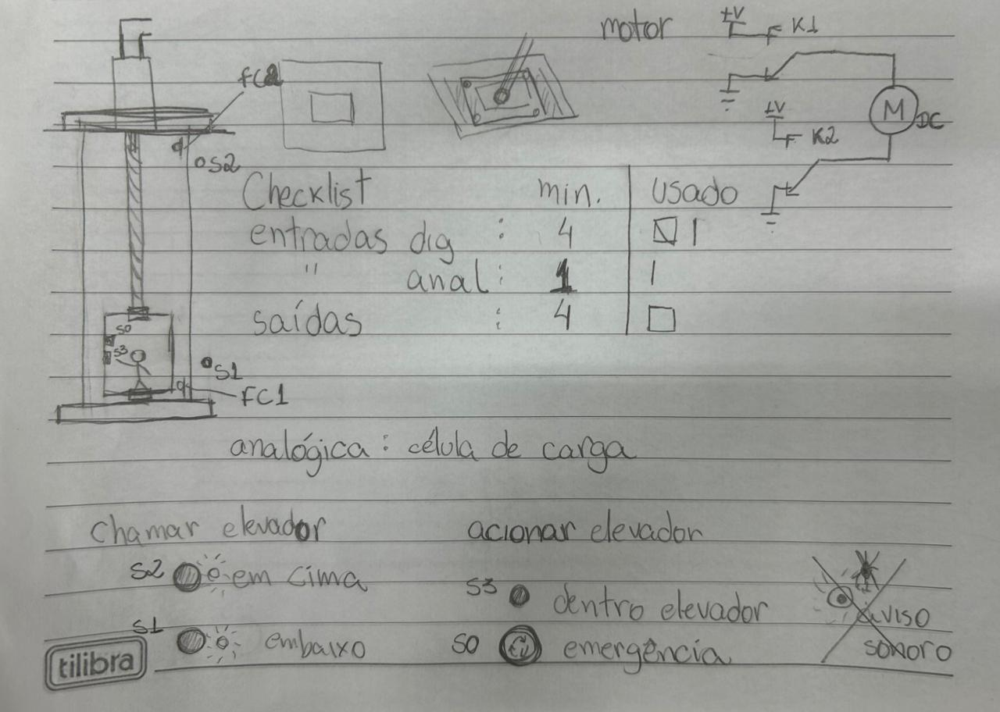
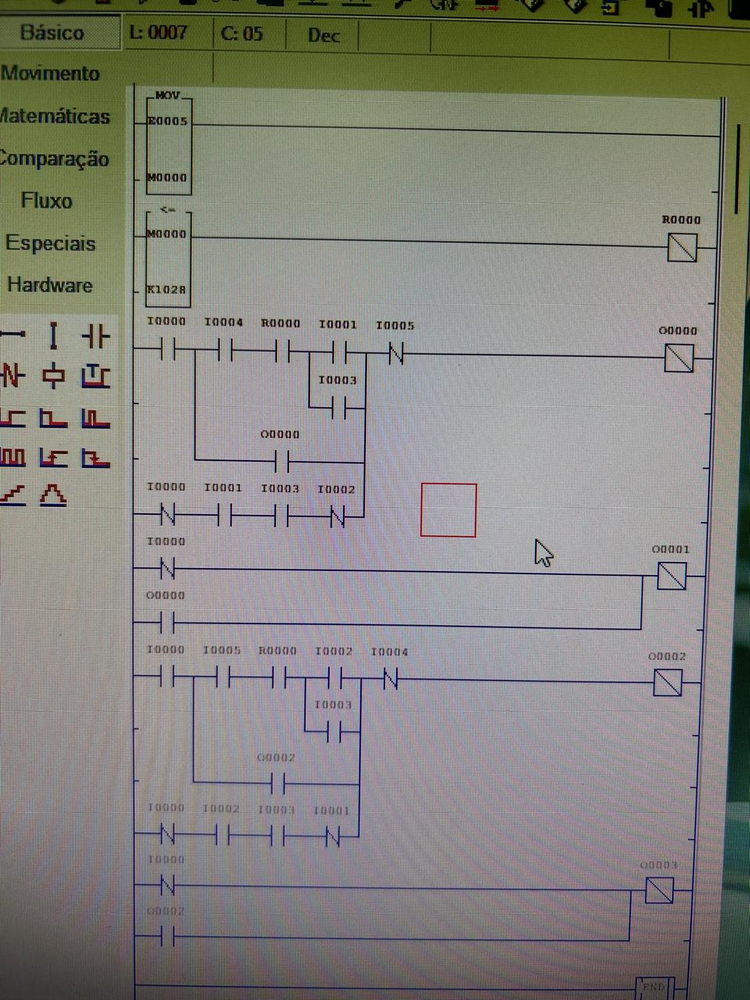
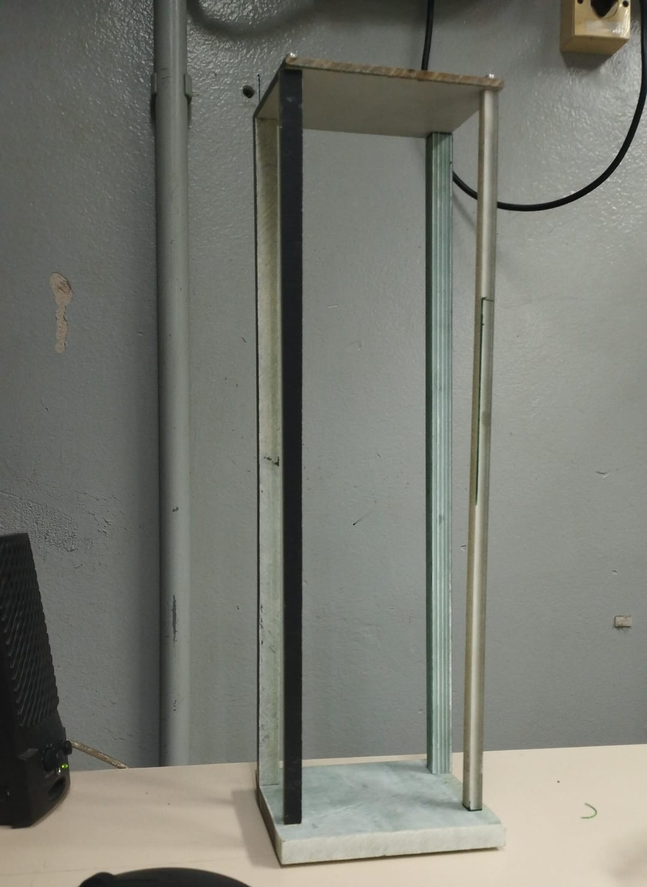
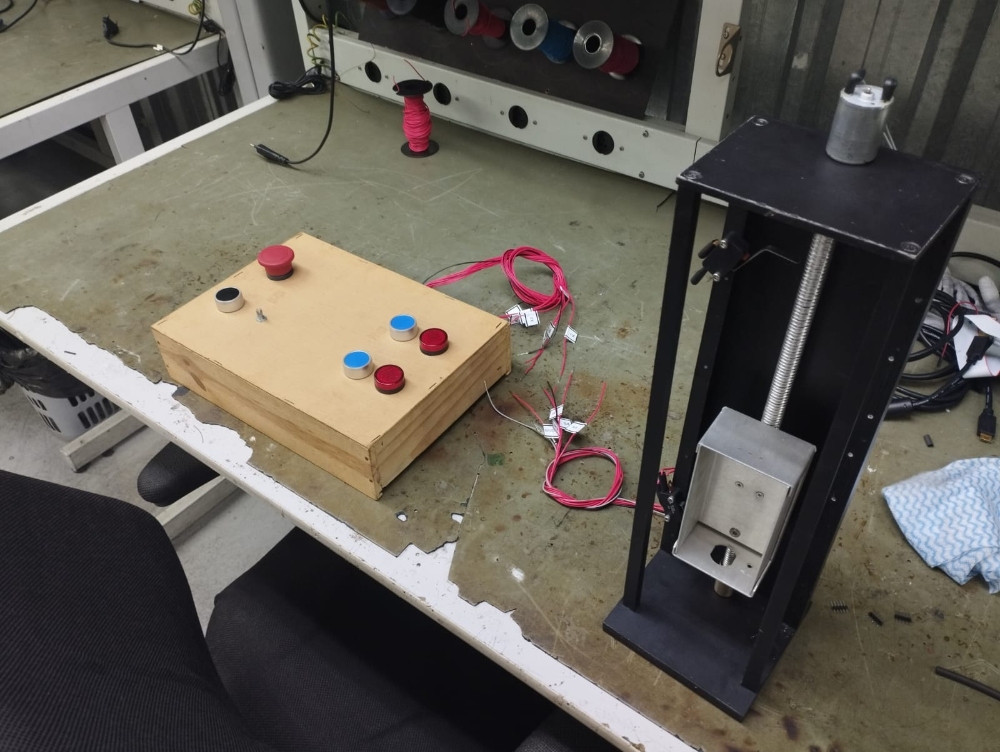
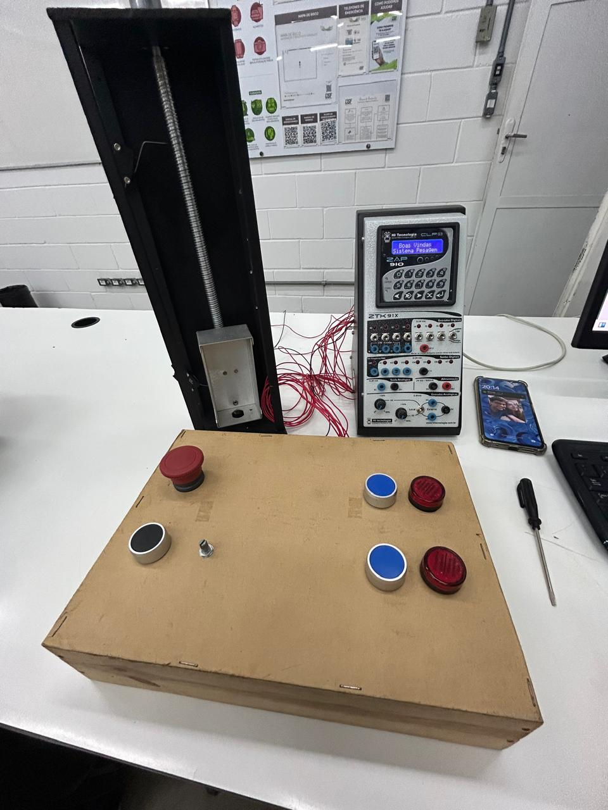
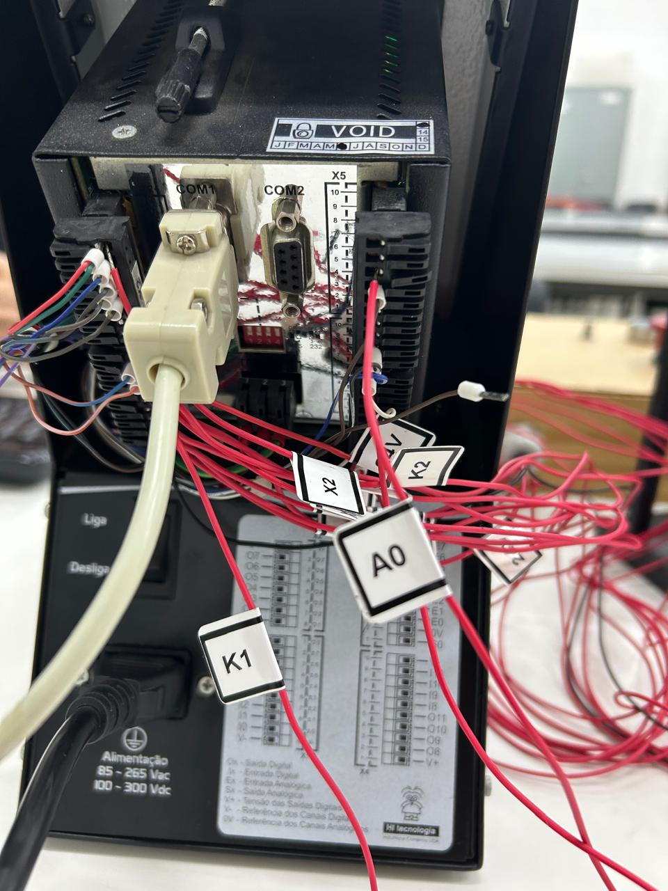

Automação inteligente com sustentabilidade
Automação inteligente via CLP
O Projeto InovaTech visa criar um sistema de automação inteligente com foco em sustentabilidade. A proposta inclui sensores, controle digital e monitoramento remoto, visando eficiência energética e redução de custos. O Projeto visa criar um sistema de automação inteligente com foco em viabilidade e flexibilidade de configuração. A proposta inclui sensores e controle digital, utilizando o software de CLP-Zap visando eficiência energética e redução de custos.

Para começo de processo, o grupo desenhou junto ao esquema de projeção da maquete, sequências e a lógica por trás do funcionamento do sistema de elevador, atribuindo o número de entradas e saídas digitais/analógicas permitidas e pensando em maneiras de realizar a interação entre o CLP e a maquete.
Esse passo é extremamente importante, já que é a base de pensamento para elaboração do código e processo do protótipo.

Com a organização da lógica de comando, o grupo deu início à realização do código para a sequência de operação dos componentes, utilizando de intertravamento entre botões pulsadores, uso de memória para análise do valor analógico do peso, onde o elevador trava pelo excesso atingido, botão de emergência em série NF para interromper o circuito, relés alimentando cada um uma bobina que corresponde à inversão de tensão para o motor, LEDs em paralelo com os contatos e os fins de curso que abrem o circuito quando ativados.
É importante citar a lógica de retorno de funcionamento do protótipo após uma parada, que aciona um botão de fora e o de dentro para chegar em qualquer um dos fins de curso.


Junto ao desenvolvimento do código, o grupo deu início à confecção da parte física do protótipo (realizada com fibra de vidro), utilizando-se dos botões e potenciômetro separadamente do elevador, para melhor interação com o funcionamento do projeto. Os fins de curso foram instalados nas duas extremidades verticais da estrutura, junto à fixação de uma vara roscada que atravessava toda a maquete no motor DC instalado na parte superior. O elevador consegue se mover pelas porcas soldadas atrás do mesmo, que permitiram a locomoção pela rosca em todo o trajeto.


Por fim, com todos os passos anteriores realizados, os testes começaram e foram verificados com êxito, sem problemas de conexão entre o CLP e o protótipo, utilizando da parte de trás do CLPZAP para melhor ligação da parte de cabos do sistema, alimentando os relés e toda parte de comando, o que garante também a parte estética da apresentação. O projeto atendeu as expectativas planejadas desde o começo, mas sempre é possível pensar em melhorias futuras para o sistema de elevador CLP.